| 日付 | 2015年12月6日（日） |
|---|---|
| 山域 | 高尾周辺 |
| メンバー | グループ（男6女4子供6） |
| 山行形態 | 子連れ日帰り |
| アクセス | 電車、ケーブルカー |
| ルート (Map) | ケーブルカー高尾山駅 (9:50) - 4号路 - (10:48) 高尾山 (12:02) - 1号路 - (12:55) 琵琶滝方面分岐 - (14:03) 高尾山口駅 |
久々に山友達と忘年山行に行く。
今回は子供がたくさん参加するということで、行先は無難に高尾山を選択。
高尾山口駅で集合し、ケーブルカー乗り場に向かって歩き始める。

この辺りは紅葉がまだ残っている。
高尾山もみじまつりは先月末で終了しているが、今年は紅葉が遅いらしい。
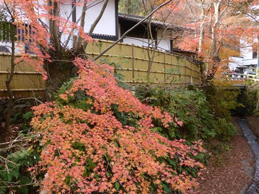
ケーブルカー駅に到着。
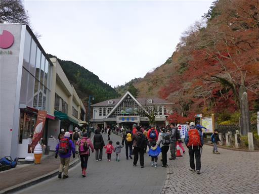
紅葉の時期が過ぎても、まだまだ大勢の人で賑わっている。
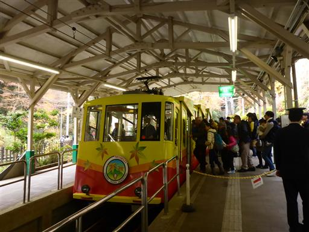
ケーブルカーの高尾山駅に到着。標高450m。
晴れてはいないが空気が澄んでいて、遠くまで見渡せる。
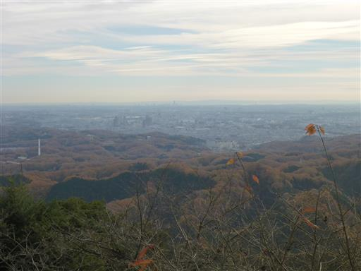
売店が軒を連ねている。団子を食べたりで時間かかる。
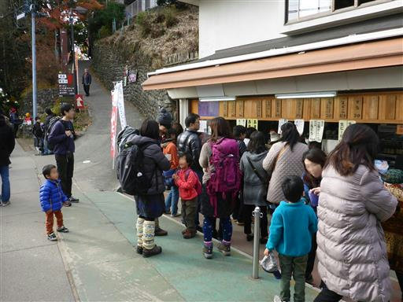
準備が整ったらようやく出発。4号路を歩くことにする。
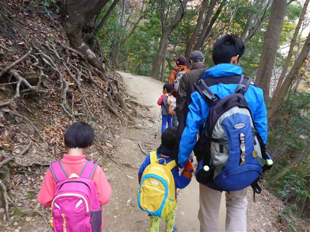
今日は息子も頑張って歩いている。
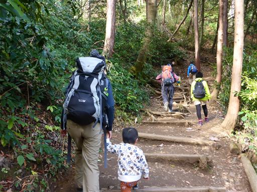
吊橋に到着。子供達はジャンプして喜んでいる。
単調な道より、こういったものがある方が歩いていて楽しい。
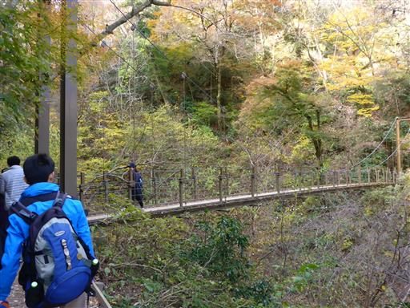
途中のベンチで休憩。休憩をとったら出発するが、息子は途中リタイア。
娘は2歳4か月でこの道を歩いているのだが…
歩いている子供の中では息子が最年少のため、付いて行けなかったようだ。
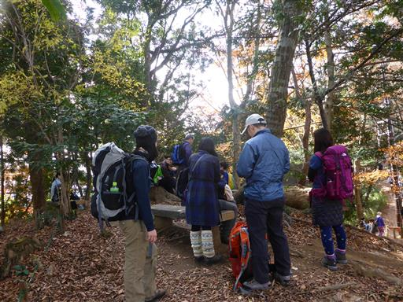
山頂直下で1号路と合流すると、人が多くなる。
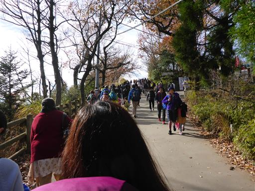
高尾山の山頂に到着。標高599m。
相変わらず賑わっている。
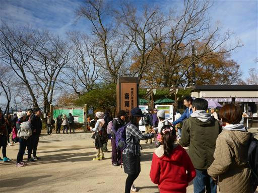
山頂からは見事な富士山が見える。
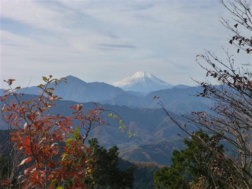
少し下った広場にシートを広げて、皆で昼食をとる。
これだけ大勢でシートを広げるのは久しぶりだ。
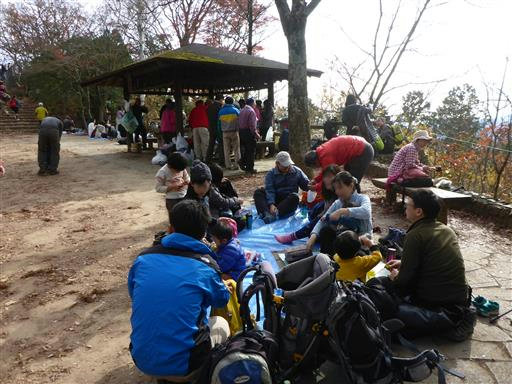
昼食後、子供たちは落ち葉を集めて遊んでいる。
服に付いたらなかなか取れない、厄介な落ち葉だ。
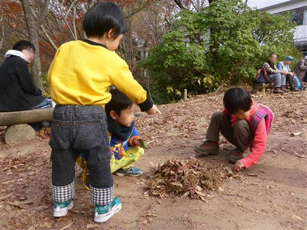
ほぼ初対面なのだが、子供はすぐ仲良くなる。
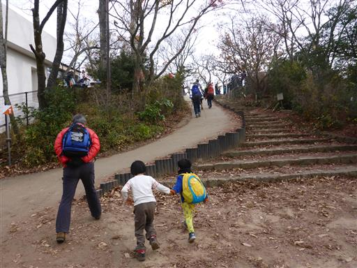
山頂部も木によっては紅葉が残っている。
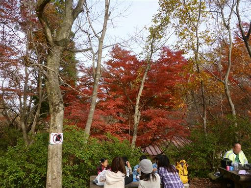
昼食をとったら混雑する山頂を出発する。
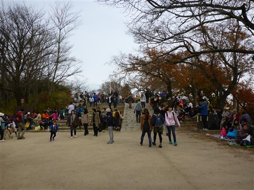
下山は1号路を選択。この時間になっても続々と人が登って来る。
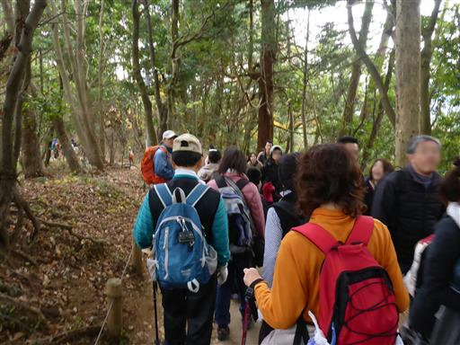
マニ車のようなものを、ぐるぐる回して遊んでいる。
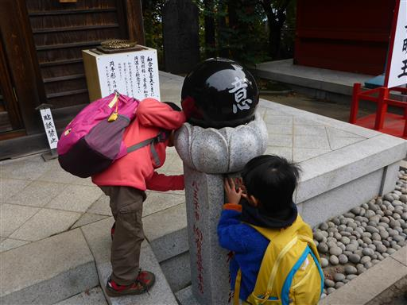
1号路はあちらこちらで売店が軒を連ねている。
観光客が大勢歩いていて大賑わいだ。
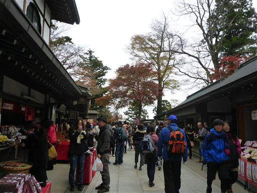
帰りはケーブルカーには乗らず、琵琶滝に下るコースを歩く。
標識には上級者向けと書かれているが、特に難しい場所はない。
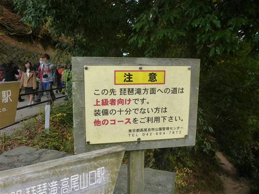
1号路の喧騒が嘘のような静かな道になる。
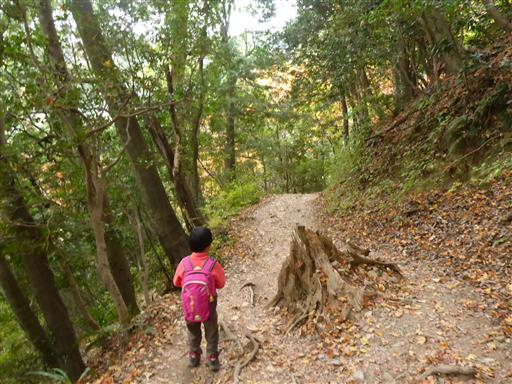
下山後は高尾山口駅と直結した極楽湯に寄る。
つい最近オープンした温泉施設だ。立川駅に移動して忘年会を行った後、解散する。
ほとんど家族でしか山に行かなくなったが、他の子供達と一緒に登るのも刺激があって
楽しい経験だった。
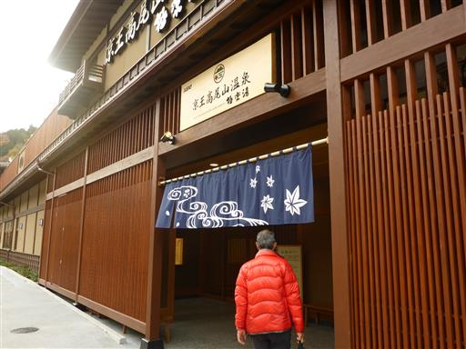